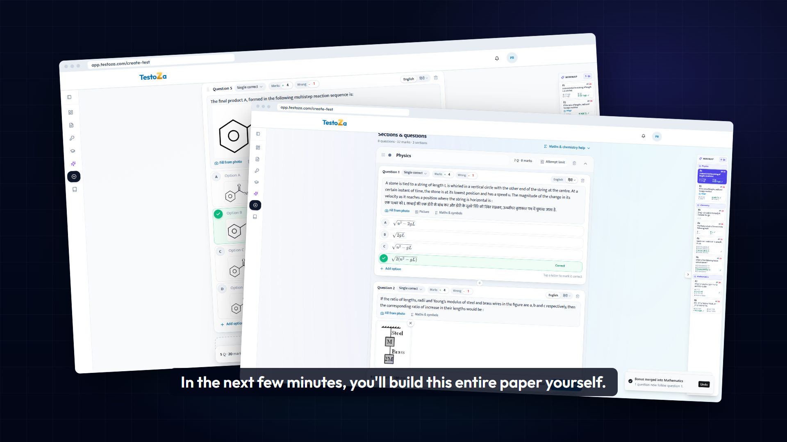
The finished paper flies past: the bromobenzene question with structure options, then the sectioned paper.
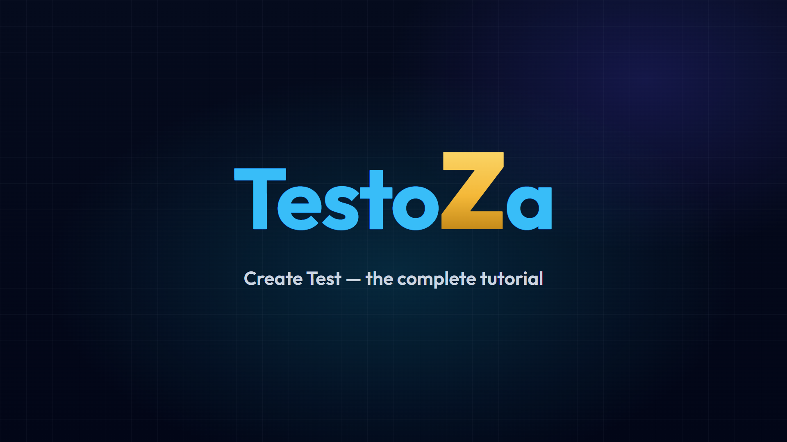
Wordmark builds, the gold Z drops in last with a whoosh and an impact.
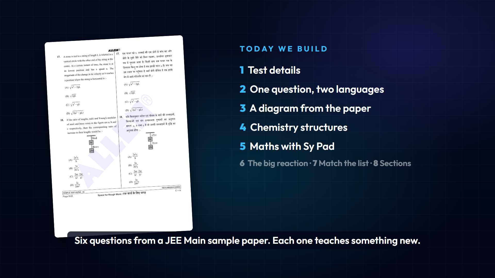
Allen Sample Paper 04 on the left; the chapter list lights up one by one.
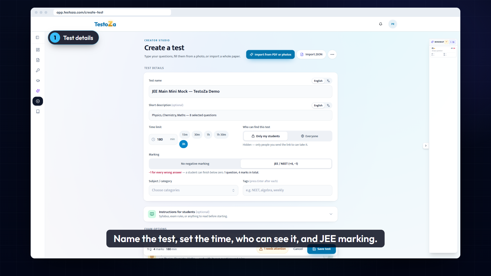
Title, description, 3h, Only my students, JEE / NEET (+4, −1). Institution branding opens next.
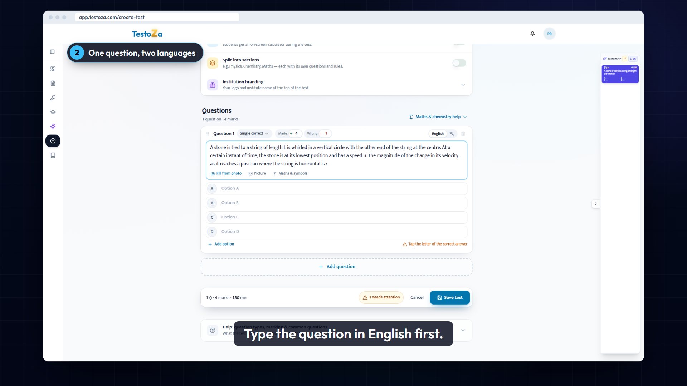
Physics p8 Q17 typed in English.
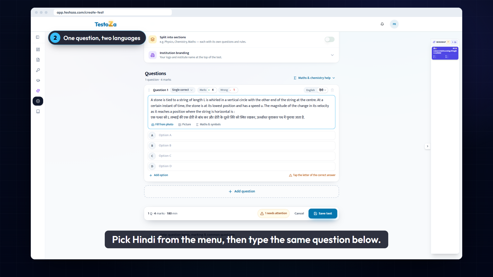
Language menu → हिंदी; the Hindi line types below (English letters turn into Hindi on space). √ options from Sy Pad, D correct.
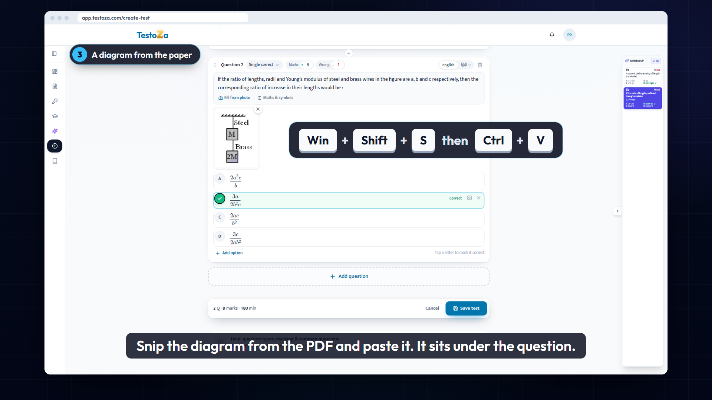
Picture → snip button, Win + Shift + S on the PDF, Ctrl + V. The figure sits below the question, above the options. Tip shown: a new question keeps the last language, tap English.
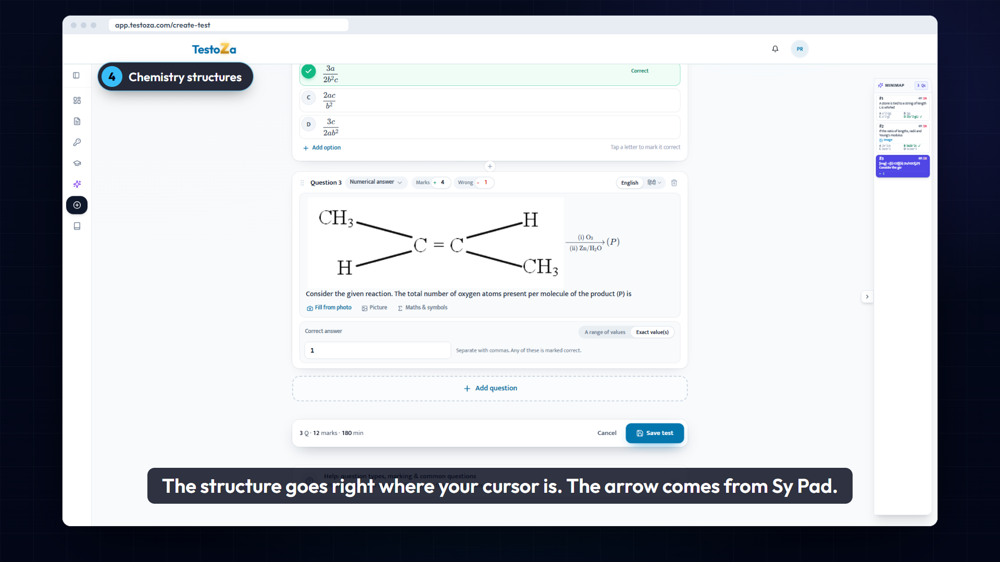
Picture → cloud: but-2-ene placed at the cursor, then Sy Pad arrow O₃ / Zn-H₂O. Numerical answer, exact value 1.
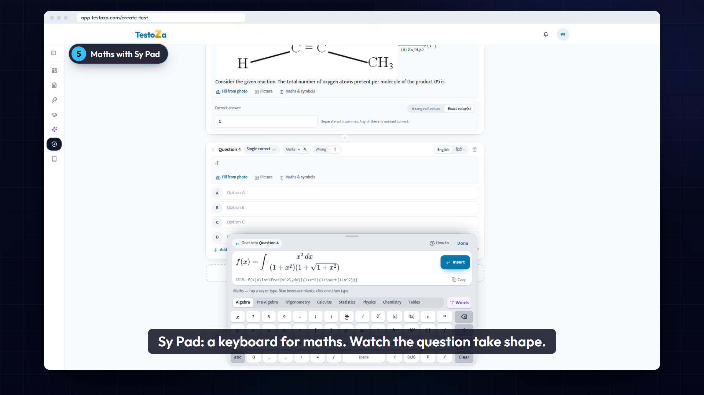
The integral builds in Sy Pad's live preview, "Goes into Question 4", then log / √ / π⁄4 options, B correct.
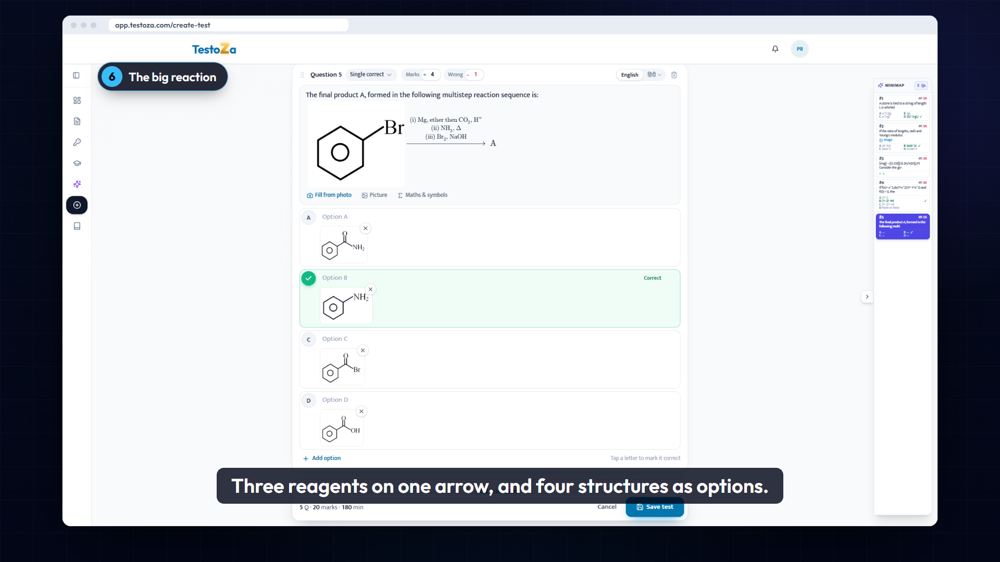
Bromobenzene inline, Sy Pad's Reaction Reagents editor with three rows, four structure pictures as options, B correct.
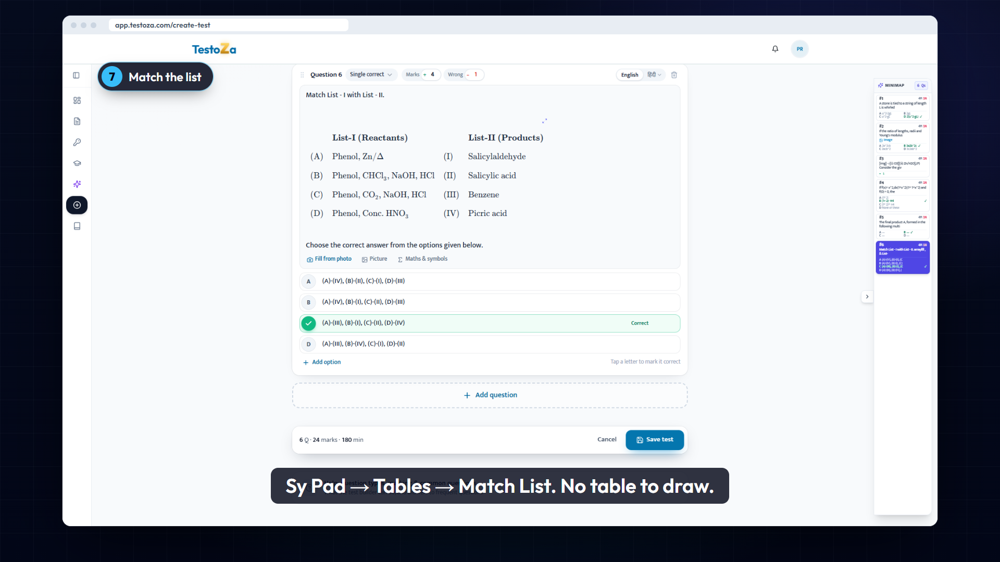
Sy Pad → Tables → Match List; reactants and products filled in the grid. C correct.
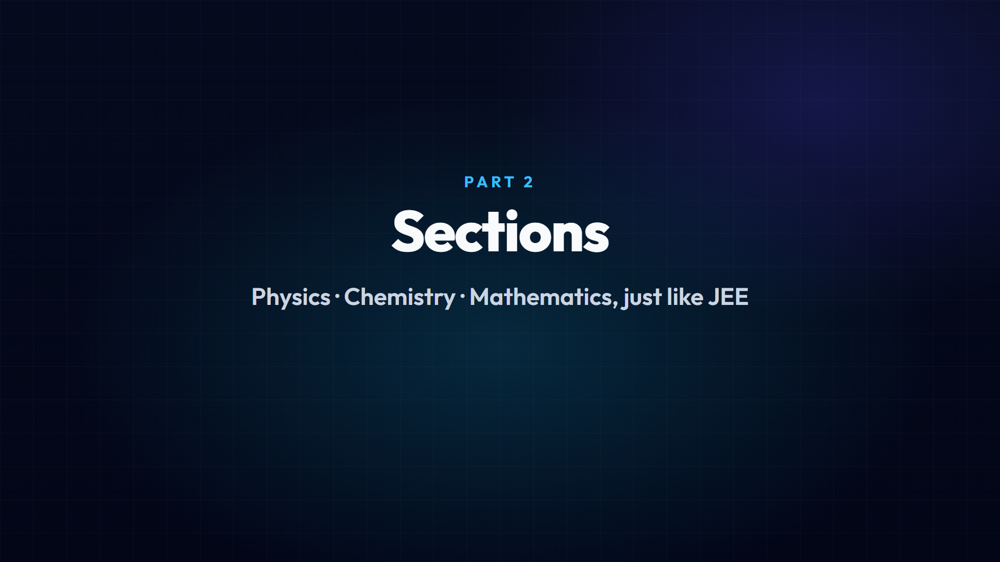
"Part 2 — Sections" card, then the maths question is dragged to the end by its handle.
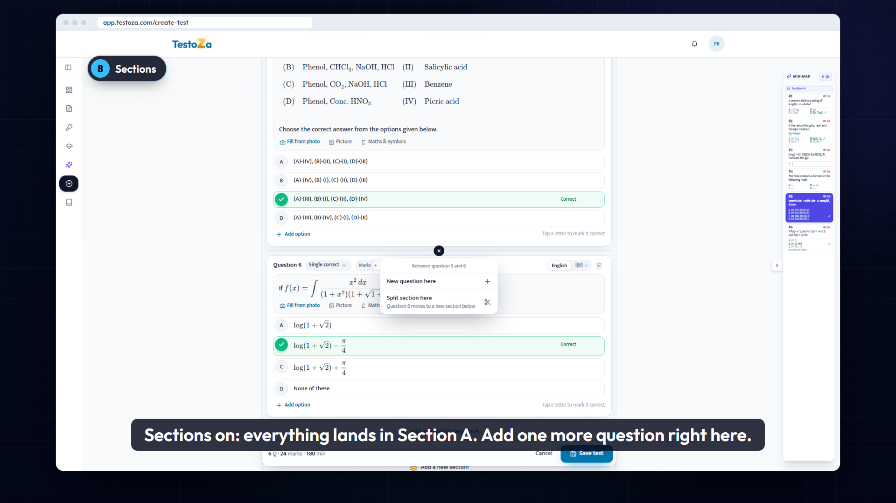
All questions land in Section A; the "+" between questions offers New question here / Split section here. The cobalt-complex question is added.
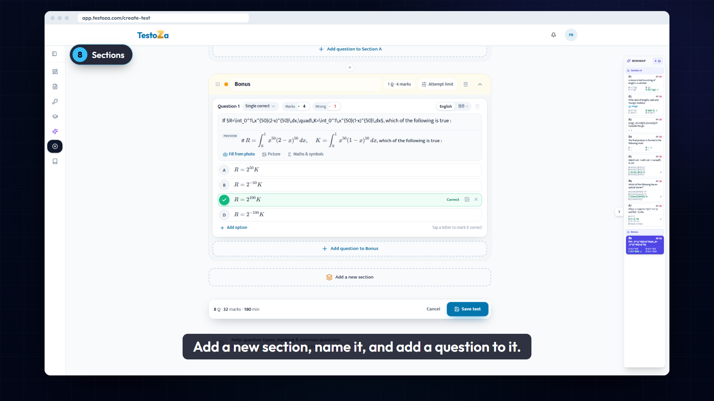
Add a new section, name it "Bonus", add the R and K integral question.
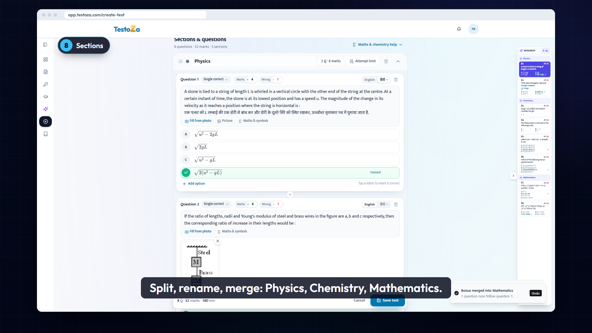
Split Section A where chemistry starts → Physics | Chemistry; split the maths question out → Mathematics; merge Bonus into Mathematics ("Bonus merged into Mathematics").
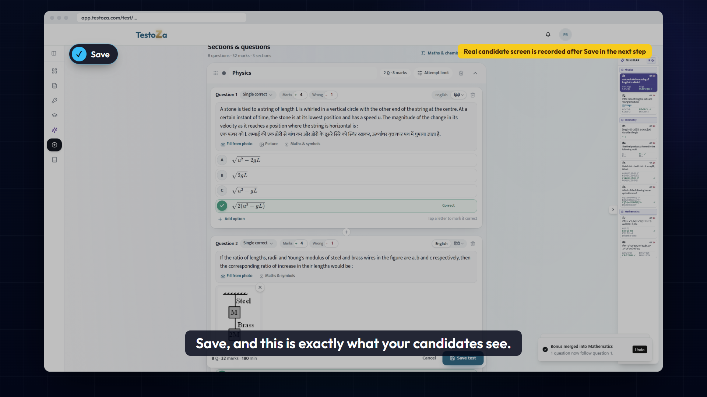
Save; the card glows on My Tests; the paper opens as a candidate sees it. (Captured after Save in the recording step.)
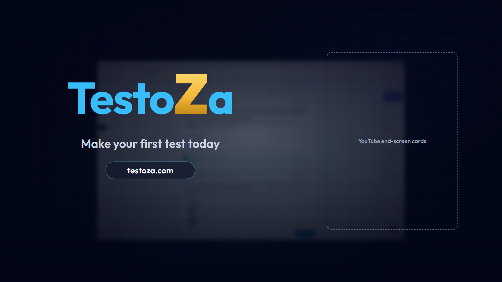
The paper blurs behind, logo lands, testoza.com; right side left clear for YouTube end-screen cards.